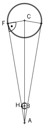

Aufgabe 101 Der Mond ist gerade verdeckt, wenn man einen Stift mit einem Durchmesser von 7 mm etwa 78 cm vor ein Auge hält. Welchen Durchmesser hat er, wenn er 384 000 km entfernt ist? FC||HE.  Strahlensatz: FC AC ---- = ---- |*HB HB AB mit FC = d/2 und HB = 7 mm/2 = 3,5 mm und 78 cm = 780 mm AC * HB FC = ---------- AB 384 00 km * 3,5 mm FC = --------------------- = 1 723 km 780 mm d = 2 * FC = 2 * 1 723 km = 3 446 km